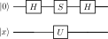

<!DOCTYPE html>
<html xmlns="http://www.w3.org/1999/xhtml">
<head>
  <meta charset="utf-8" />
  <meta name="generator" content="pandoc 3.10.2" />
  <meta name="viewport" content="width=device-width, initial-scale=1.0, user-scalable=yes" />
  <meta name="author" content="QuoNic" />
  <title>quantum_walk</title>
  <style>
    /* Default styles provided by pandoc.
    ** See https://pandoc.org/MANUAL.html#variables-for-html for config info.
    */
    html {
      color: #1a1a1a;
      background-color: #fdfdfd;
    }
    body {
      margin: 0 auto;
      max-width: 36em;
      padding-left: 50px;
      padding-right: 50px;
      padding-top: 50px;
      padding-bottom: 50px;
      hyphens: auto;
      overflow-wrap: break-word;
      text-rendering: optimizeLegibility;
      font-kerning: normal;
    }
    @media (max-width: 600px) {
      body {
        font-size: 0.9em;
        padding: 12px;
      }
      h1 {
        font-size: 1.8em;
      }
    }
    @media print {
      html {
        background-color: white;
      }
      body {
        background-color: transparent;
        color: black;
      }
      p, h2, h3 {
        orphans: 3;
        widows: 3;
      }
      h2, h3, h4 {
        page-break-after: avoid;
      }
    }
    p {
      margin: 1em 0;
    }
    a {
      color: #1a1a1a;
    }
    a:visited {
      color: #1a1a1a;
    }
    img {
      max-width: 100%;
    }
    svg {
      height: auto;
      max-width: 100%;
    }
    h1, h2, h3, h4, h5, h6 {
      margin-top: 1.4em;
    }
    h5, h6 {
      font-size: 1em;
      font-style: italic;
    }
    h6 {
      font-weight: normal;
    }
    ol, ul {
      padding-left: 1.7em;
      margin-top: 1em;
    }
    li > ol, li > ul {
      margin-top: 0;
    }
    blockquote {
      margin: 1em 0 1em 1.7em;
      padding-left: 1em;
      border-left: 2px solid #e6e6e6;
      color: #606060;
    }
    code {
      white-space: pre-wrap;
      font-family: Menlo, Monaco, Consolas, 'Lucida Console', monospace;
      font-size: 85%;
      margin: 0;
      hyphens: manual;
    }
    pre {
      margin: 1em 0;
      overflow: auto;
    }
    pre code {
      padding: 0;
      overflow: visible;
      overflow-wrap: normal;
    }
    .sourceCode {
     background-color: transparent;
     overflow: visible;
    }
    hr {
      border: none;
      border-top: 1px solid #1a1a1a;
      height: 1px;
      margin: 1em 0;
    }
    table {
      margin: 1em 0;
      border-collapse: collapse;
      width: 100%;
      overflow-x: auto;
      display: block;
      font-variant-numeric: lining-nums tabular-nums;
    }
    table caption {
      margin-bottom: 0.75em;
    }
    tbody {
      margin-top: 0.5em;
      border-top: 1px solid #1a1a1a;
      border-bottom: 1px solid #1a1a1a;
    }
    th {
      border-top: 1px solid #1a1a1a;
      padding: 0.25em 0.5em 0.25em 0.5em;
    }
    td {
      padding: 0.125em 0.5em 0.25em 0.5em;
    }
    header {
      margin-bottom: 4em;
      text-align: center;
    }
    #TOC li {
      list-style: none;
    }
    #TOC ul {
      padding-left: 1.3em;
    }
    #TOC > ul {
      padding-left: 0;
    }
    #TOC a:not(:hover) {
      text-decoration: none;
    }
    span.smallcaps{font-variant: small-caps;}
    div.columns{display: flex; gap: 1.5em;}
    div.column{flex: auto;}
    @media screen {
    div.columns{gap: min(4vw, 1.5em);}
    div.column{overflow-x: auto;}
    }
    div.hanging-indent{margin-left: 1.5em; text-indent: -1.5em;}
    /* The extra [class] is a hack that increases specificity enough to
       override a similar rule in reveal.js */
    ul.task-list[class]{list-style: none;}
    ul.task-list li input[type="checkbox"] {
      font-size: inherit;
      width: 0.8em;
      margin: 0 0.8em 0.2em -1.6em;
      vertical-align: middle;
    }
  </style>
  <script defer="" src="" type="text/javascript"></script>
</head>
<body>
<header id="title-block-header">
<h1 class="title">quantum_walk</h1>
<p class="author">QuoNic</p>
</header>
<div class="center">
<p><strong>Algorithms / 算法</strong> | 难度：中级 | 预计时间：15
分钟</p>
</div>
<h1 id="为什么需要">为什么需要？</h1>
<p>量子行走是经典随机行走的量子推广，是许多量子算法的基础。</p>
<h2 id="经典局限">经典局限</h2>
<p>̱</p>
<ul>
<li><p>经典随机行走：扩散速度 <span
class="math inline">\(O(\sqrt{t})\)</span></p></li>
<li><p>经典行走需要 <span class="math inline">\(O(t)\)</span>
时间到达距离 <span class="math inline">\(t\)</span></p></li>
</ul>
<h2 id="量子优势">量子优势</h2>
<p>̱</p>
<ul>
<li><p>量子行走：扩散速度 <span
class="math inline">\(O(t)\)</span></p></li>
<li><p>量子行走提供二次加速</p></li>
<li><p>是许多量子算法的基础（搜索、图算法）</p></li>
</ul>
<h2 id="实际应用">实际应用</h2>
<p>̱</p>
<ul>
<li><p>图搜索（二次加速）</p></li>
<li><p>图同构问题</p></li>
<li><p>量子算法设计</p></li>
</ul>
<h1 id="快速上手">快速上手</h1>
<pre style="python"><code>from quonic.algorithms import quantum_walk

# Quantum walk on a line
result = quantum_walk(steps=10, graph=&quot;line&quot;)
print(f&quot;Position distribution: {result.distribution}&quot;)</code></pre>
<p><strong>预期输出</strong>：</p>
<pre><code>Position distribution: {0: 0.1, 2: 0.2, 4: 0.3, ...}</code></pre>
<h1 id="原理详解">原理详解</h1>
<h2 id="电路图">电路图</h2>
<div class="center">
<p></p>
</div>
<h2 id="数学推导">数学推导</h2>
<p>量子行走的演化算子： <span class="math display">\[\begin{equation}
U = S \cdot (H \otimes I)
\end{equation}\]</span></p>
<p>其中 <span class="math inline">\(S\)</span> 是条件移位算子，<span
class="math inline">\(H\)</span> 是 Hadamard 门。</p>
<p><strong>一步行走</strong>： <span
class="math display">\[\begin{equation}
|\psi_{t+1}\rangle = U|\psi_t\rangle
\end{equation}\]</span></p>
<h2 id="几何解释">几何解释</h2>
<p>量子行走利用量子叠加态同时探索多个路径，通过干涉效应实现二次加速。</p>
<h1 id="代码详解">代码详解</h1>
<pre style="python"><code>from quonic.algorithms import quantum_walk

# quantum_walk(steps, graph, shots)
# steps: number of walk steps
# graph: graph type (line, cycle, complete)
# shots: number of measurements
result = quantum_walk(steps=10, graph=&quot;line&quot;, shots=1024)

# result.distribution: position probability distribution
# result.positions: measured positions
print(f&quot;Distribution: {result.distribution}&quot;)</code></pre>
<h1 id="进阶用法">进阶用法</h1>
<h2 id="场景-1不同图">场景 1：不同图</h2>
<pre style="python"><code># Walk on different graphs
result_line = quantum_walk(steps=10, graph=&quot;line&quot;)
result_cycle = quantum_walk(steps=10, graph=&quot;cycle&quot;)
result_complete = quantum_walk(steps=10, graph=&quot;complete&quot;)</code></pre>
<h2 id="场景-2不同步数">场景 2：不同步数</h2>
<pre style="python"><code># Different number of steps
for steps in [5, 10, 20, 50]:
    result = quantum_walk(steps=steps, graph=&quot;line&quot;)
    print(f&quot;Steps: {steps}, Spread: {result.spread}&quot;)</code></pre>
<h1 id="适用场景">适用场景</h1>
<h2 id="图搜索">图搜索</h2>
<p>量子行走可以用于图搜索，提供二次加速。</p>
<h2 id="图算法">图算法</h2>
<p>量子行走可以用于图同构、图连通性等问题。</p>
<h2 id="量子算法设计">量子算法设计</h2>
<p>量子行走是许多量子算法的基础。</p>
<h1 id="常见问题">常见问题</h1>
<h2
id="量子行走和经典随机行走有什么区别">量子行走和经典随机行走有什么区别？</h2>
<p>量子行走利用量子叠加和干涉，扩散速度是经典的平方。</p>
<h2 id="量子行走需要多少量子比特">量子行走需要多少量子比特？</h2>
<p>量子行走需要的量子比特数取决于图的大小。</p>
<h1 id="学习路径">学习路径</h1>
<h2 id="前置知识">前置知识</h2>
<p>̱</p>
<ul>
<li><p>量子比特和量子门</p></li>
<li><p>Hadamard 门</p></li>
<li><p>量子测量</p></li>
</ul>
<h2 id="继续学习">继续学习</h2>
<p>̱</p>
<ul>
<li><p>量子搜索算法</p></li>
<li><p>量子图算法</p></li>
<li><p>量子模拟</p></li>
</ul>
<h1 id="完整示例代码">完整示例代码</h1>
<h2 id="示例-1基本量子行走">示例 1：基本量子行走</h2>
<pre style="python"><code>from quonic.algorithms import quantum_walk

result = quantum_walk(steps=10, graph=&quot;line&quot;)
print(f&quot;Distribution: {result.distribution}&quot;)</code></pre>
<p> </p>
<h1 id="下载">下载</h1>
<p></p>
<ul>
<li><p>(https://github.com/ChrisLee0721/QuoNic/blob/main/examples/quantum_walk/quantum_walk.py)</p></li>
</ul>
</body>
</html>
